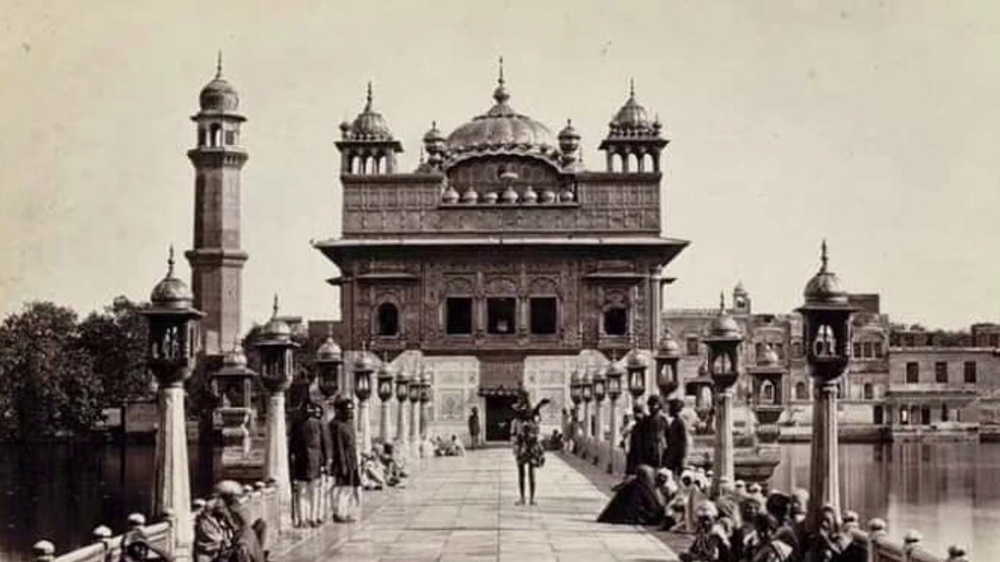

The Golden Temple (also known as the Harmandir Sahib, lit. 'abode of God', Punjabi pronunciation or the Darbār Sahib, 'exalted court',is a gurdwara located in the city of Amritsar, Punjab, India. It is the preeminent spiritual site of Sikhism. It is one of the holiest sites in Sikhism, alongside the Gurdwara Darbar Sahib Kartarpur in Kartarpur, and Gurdwara Janam Asthan in Nankana Sahib.
The man-made pool on the site of the temple was completed by the fourth Sikh Guru, Guru Ram Das, in 1577. In 1604, Guru Arjan placed a copy of the Adi Granth in Harmandir Sahib. The Gurdwara was repeatedly rebuilt by the Sikhs after it became a target of persecution and was destroyed several times by the Mughal and invading Afghan armies. Maharaja Ranjit Singh, after founding the Sikh Empire, rebuilt it in marble and copper in 1809, and overlaid the sanctum with gold leaf in 1830. This has led to the name the Golden Temple.

The Golden Temple is spiritually the most significant shrine in Sikhism. It became a centre of the Singh Sabha Movement between 1883 and 1920s, and the Punjabi Suba movement between 1947 and 1966. In the early 1980s, the Gurdwara became a centre of conflict between the Indian government and a movement led by Jarnail Singh Bhindranwale. In 1984, Prime Minister Indira Gandhi sent in the Indian Army as part of Operation Blue Star, leading to deaths of over 1,000 soldiers and civilians, as well as causing much damage to the Gurdwara and the destruction of Akal Takht. The Gurdwara complex was rebuilt again after the 1984 damage.
History
According to the Sikh historical records, the land that became Amritsar and houses the Harimandir Sahib was chosen by Guru Amar Das, the third Guru of the Sikh tradition. It was then called Guru Da Chakk, after he had asked his disciple Ram Das to find land to start a new town with a man-made pool as its central point After Guru Ram Das succeeded Guru Amar Das in 1574, and in the face of hostile opposition from the sons of Guru Amar Das,Guru Ram Das founded the town that came to be known as "Ramdaspur". He started by completing the pool with the help of Baba Buddha (not to be confused with the Buddha of Buddhism). Guru Ram Das built his new official centre and home next to it. He invited merchants and artisans from other parts of India to settle in the new town with him.
Architecture
The Golden Temple's architecture reflects different architectural practices prevalent in the Indian subcontinent, as various iterations of temple were rebuilt and restored. The Temple is described by Ian Kerr, and other scholars, as a mixture of the Indo-Islamic Mughal and the Hindu Rajput architecture. The sanctum is a 12.25 x 12.25 metre square with two storeys and a gold leaf dome. This sanctum has a marble platform that is a 19.7 x 19.7 metre square. It sits inside an almost square (154.5 x 148.5 m2) pool called amritsar or amritsarovar (amrit means nectar, sar is short form of sarovar and means pool). The pool is 5.1 metre deep and is surrounded by a 3.7 metre wide circumambulatory marble passage that is circled clockwise.